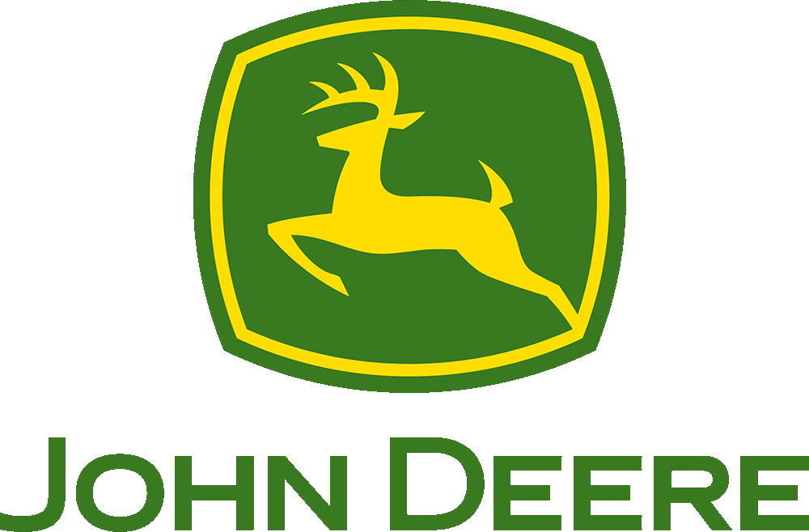
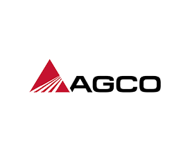
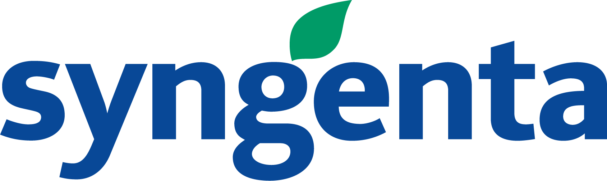
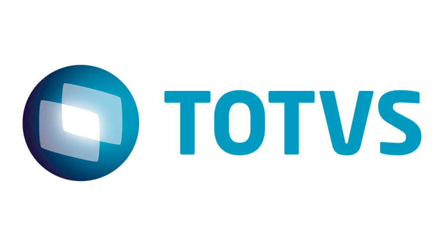

Apresentação
AgroUP é uma empresa especializada em oferecer soluções tecnológicas para o setor agrícola, focada em sistemas computacionais que auxiliam agricultores na gestão eficiente de suas propriedades. Seus produtos incluem ferramentas de monitoramento em tempo real, análise de dados, e otimização de processos agrícolas, ajudando produtores a melhorar a produtividade, reduzir custos e tomar decisões mais assertivas. Com um compromisso em trazer inovação para o campo, a AgroUP promove o uso de tecnologias avançadas como inteligência artificial e internet das coisas (IoT) para transformar a agricultura em um setor mais sustentável e competitivo.
Objetivos
A AgroUP tem como objetivo centralizar a inovação tecnológica no setor agrícola, oferecendo soluções que aumentem a eficiência das operações no campo e promovam a sustentabilidade. A empresa visa facilitar a tomada de decisões por meio de ferramentas de análise de dados em tempo real, além de fomentar o uso de tecnologias avançadas, como inteligência artificial e internet das coisas (IoT). Outro objetivo é melhorar a conectividade rural, capacitar agricultores no uso das ferramentas e garantir que suas práticas sejam cada vez mais produtivas e ambientalmente responsáveis.
Partners
A AgroUP poderia formar parcerias estratégicas com empresas como John Deere e AGCO, que atuam na fabricação de máquinas agrícolas inteligentes, integrando seus sistemas de gestão e monitoramento às tecnologias de agricultura de precisão dessas marcas. Também poderia colaborar com empresas como Syngenta e BASF Agricultural Solutions, que já investem em soluções digitais e biotecnologia para o setor, combinando forças para otimizar a produtividade e sustentabilidade agrícola. Além disso, uma parceria com a TOTVS, que oferece softwares de gestão para o agronegócio, poderia fortalecer a integração de dados e gestão das operações agrícolas.
   Quem Somos?
Somos Agustin Penelas, Agustin Cancino e Gabriel Valenga, três alunos da Universidade Positivo empenhados em desenvolver um projeto de web development básico. Nossa proposta é criar um site funcional e intuitivo, aplicando conceitos fundamentais de HTML, CSS e JavaScript. Estamos comprometidos em adquirir habilidades técnicas sólidas enquanto colaboramos de forma criativa para entregar um projeto de qualidade. Este trabalho é uma oportunidade para expandirmos nossos conhecimentos e nos prepararmos para os desafios da área de tecnologia e desenvolvimento web.
Contatos
- AgroUP Comercial: ✉️contato@agroup.farm
- Telefone para contato: üìû (51) 98191-9763